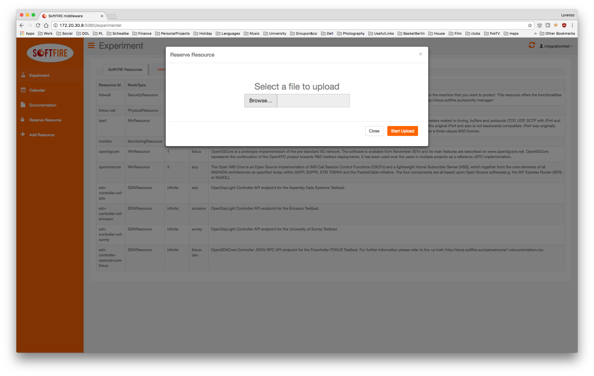
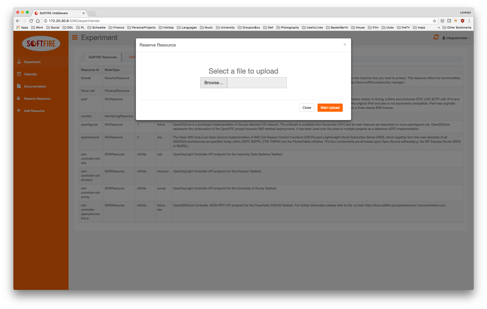
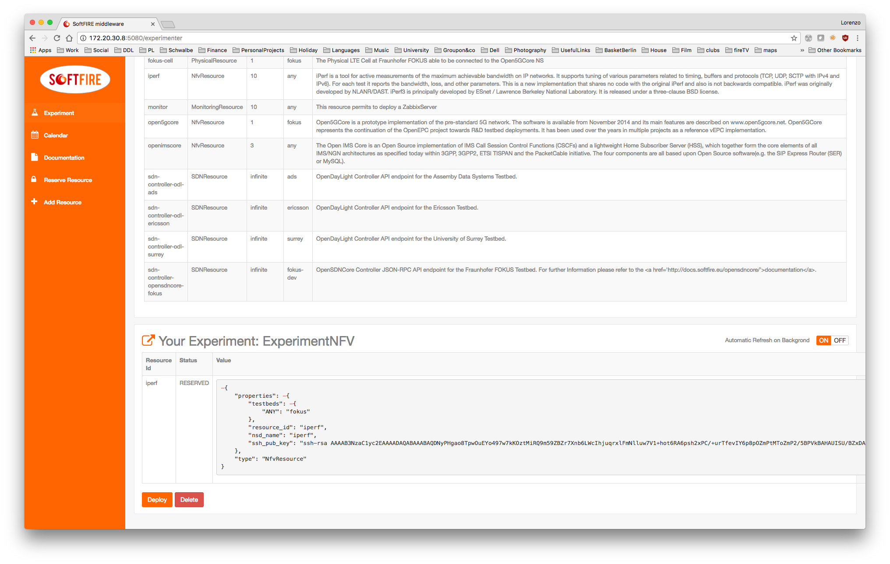
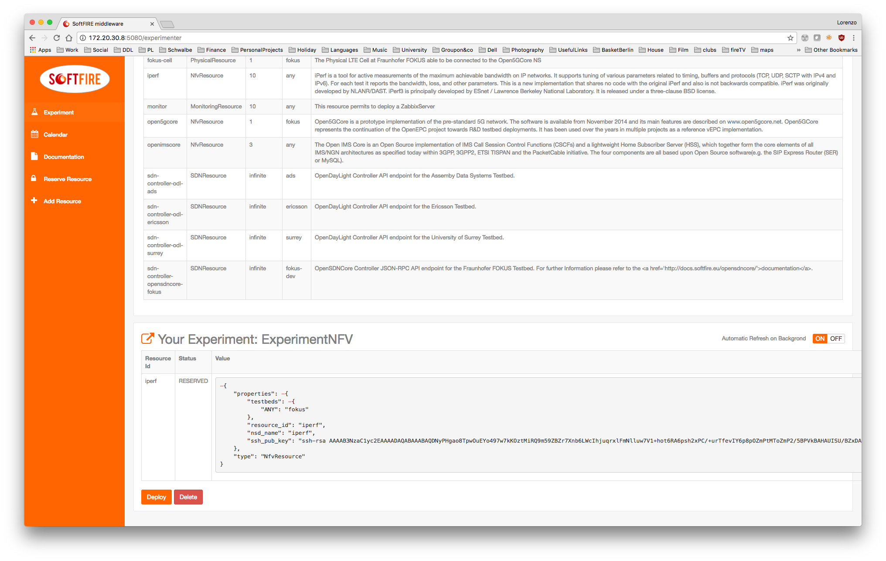
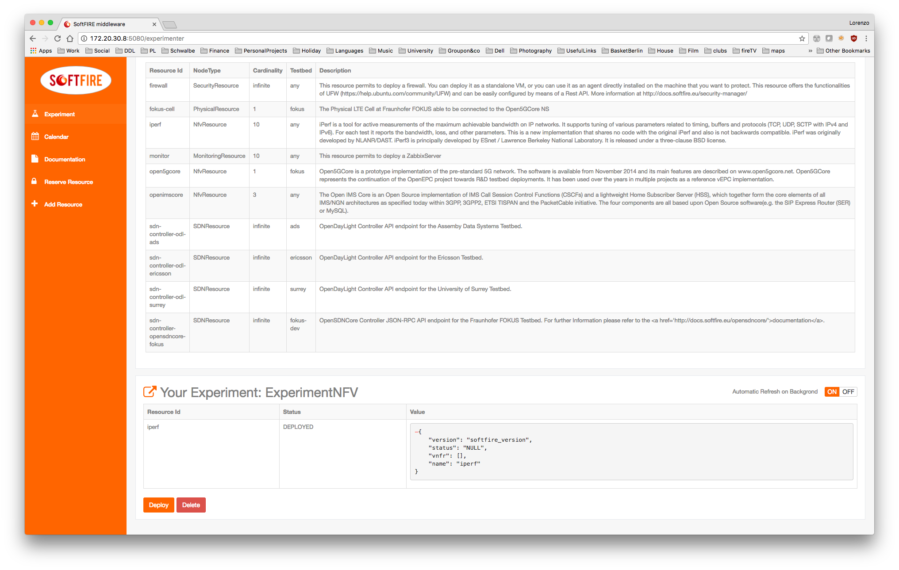
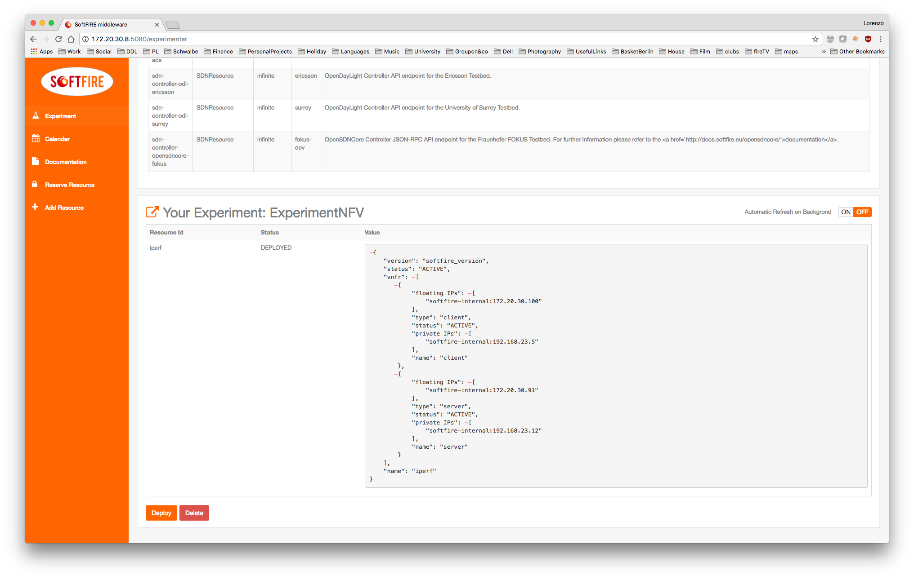

Nfv tutorial Iperf¶
This tutorial will guide you through the definition of the iperf example and to upload it.
Note
This tutorial assumes that you use a Unix system.
First of all create a folder where we can put all the necessary files.
mkdir iperf-softfire
cd iperf-softfire
then we start creating the inner folders
mkdir Files mkdir TOSCA-Metadata mkdir Definitions
now we need to create the necessary files.
touch TOSCA-Metadata/TOSCA.meta touch TOSCA-Metadata/Metadata.yaml touch Definitions/experiment.yaml
The TOSCA-Metadata/TOSCA.meta file contains TOSCA specific configurations:
vim TOSCA-Metadata/TOSCA.meta
Here you must write something like this:
TOSCA-Meta-File-Version: 1.0 CSAR-Version: 1.1 Created-By: SoftFIRE Entry-Definitions: Definitions/experiment.yaml
You can change the Created-By property, if you wish.
then we do the same with TOSCA-Metadata/Metadata.yaml that contains Metadata info of the experiment
vim TOSCA-Metadata/Metadata.yaml
Here you should write something like this:
name: ExperimentIperf start-date: "2017-11-15" end-date: "2018-2-15"
Finally we can move the real definition of the experiment:
vim Definitions/experiment.yaml
Here you should write something like this:
--- description: "Template for SoftFIRE yaml resource request definition" imports: - softfire_node_types: "http://docs.softfire.eu/etc/softfire_node_types.yaml" topology_template: node_templates: iperf: properties: resource_id: iperf testbeds: ANY: fokus ssh_pub_key: "ssh-rsa AAAAB3NzaC1yc2EAAAADAQABAAABAQDNyPHgao8TpwOuEYo497w7kKOztMiRQ9m59ZBZr7Xnb6LWcIhjuqrxlFmNlluw7V1+hot6RA6psh2xPC/+urTfevIY6p8pOZmPtMToZmP2/5BPVkBAHAUISU/BZxDAM75QX14CHg/4imcfLxzLyx4XY0SjwfrxtqTTJJW2khKJ5eNoMHnw9+NwNiM1BY9A1khZ2WXZMAlG8+NkZU+UZhIiyHWYZQU8ZrC02qI/zFfaGFX7OC/yDGbZOeGV/cuissvai4vn8gtS1Stdj+QJZ/Mcl3t2A65FlW8oSYzih+OrxLsvJ2w8dxBBdw39lPcihb3e8Za29aiKMrUINleVJ82P" nsd_name: "iperf" type: NfvResource tosca_definitions_version: tosca_simple_yaml_1_0
where all the fields are explained in the Nfv Manager page. Important to be noticed is that we are using the resource id: iperf. Another important field is the ssh_pub_key. Here you should put your public key, in order to be able to access the deployed VMs via ssh.
Putting all together¶
Now is time to create the CSAR file:
zip -r iperf.csar . -x ".*" -x "*/.*"
this command will create the CSAR file that must be uploaded to the Experiment Manager GUI like the following images.
 

 

When you click on send, the Managers will validate the resources, in case you did some mistake they should be shown now. If no errors are shown, you are able to deploy your resources by clicking deploy. Please consider that it takes some seconds to deploy the resource dependening in the experiment definition.

Once deployed, it will take time until reaching the ACTIVE state of the resource. A button on the right enable the automatic refresh of the resources' values or disable it, in the second case you will need to refresh the page.

Finally the Iperf resource reaches the ACTIVE state and also the floating ip are shown. You are now able to ssh into the server or client and see the running screen.
~|⇒ ssh -i /opt/softfire/key/softfire-key.pem ubuntu@172.20.30.91 Warning: Permanently added '172.20.30.91' (ECDSA) to the list of known hosts. Welcome to Ubuntu 16.04.2 LTS (GNU/Linux 4.4.0-77-generic x86_64) * Documentation: https://help.ubuntu.com * Management: https://landscape.canonical.com * Support: https://ubuntu.com/advantage Get cloud support with Ubuntu Advantage Cloud Guest: http://www.ubuntu.com/business/services/cloud 87 packages can be updated. 45 updates are security updates. Last login: Thu Jul 20 14:41:18 2017 from 172.20.10.131 ubuntu@server-9771458:~$ ubuntu@server-9771458:~$ ubuntu@server-9771458:~$
Note
The floating ip changes for every deployment
and see the running screen:
ubuntu@server-9771458:~$ sudo screen -x ------------------------------------------------------------ Server listening on TCP port 5001 TCP window size: 85.3 KByte (default) ------------------------------------------------------------ [ 4] local 192.168.23.12 port 5001 connected with 172.20.30.100 port 47270 [ ID] Interval Transfer Bandwidth [ 4] 0.0-300.0 sec 30.4 GBytes 872 Mbits/sec
Then remember always to delete the resources by clicking in the delete button.
Note
Also this request can last some seconds, so don't be impatient!